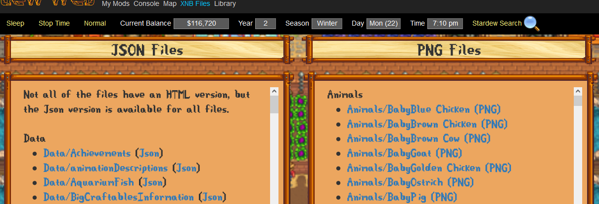
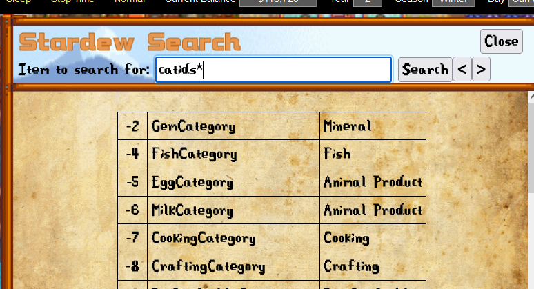

There are a number of utlities that I used for the development of Stardew Web.
-
Console- a mini-frontend to the debug console
-
Maps - Gives the details of the current Map.
- Warps - list of all Warps defined for the location.
- NPC - list of all NPCs in the location currently.
- Animals - list of all Animals in the location.
- Buildings - list of any Buildings in the location.

-
XNB Files
- Uncompresses the contents of XNB files. (Json, PNG and TMX)
-
Any file in the 'game directory\Content' will be listed. If you have any XNB files from other mods, if you put a copy
of the XNB file into the Content directory, it will be unpacked.

-
Stardew Web Search Engine - The Search Engine provides a number of details useful to Modders.
- Object Id
- Category
- Searching for 'catids*' will list all of the vanilla category Ids